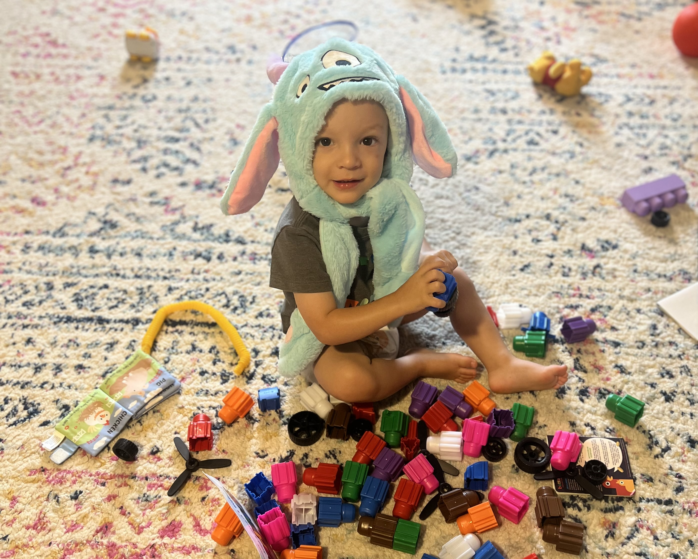

<div class="textcontainer">
<h3>About Me</h3>
<p class="margin"> </p>
<div class="center-row">
<p id="aboutme">
Howdy, My name is Kyle M. Gager. Sometimes I feel like I have lived a few different lives. I grew up in South Florida and almost became "florida-man". A couple month after I turned 21 I moved to NYC with a suitcase and a months rent, no friends, no family, no school and no job. 15 years later I left NYC as bar consultant with an amazing wife. My wife Jesselyn Cook is an incredible journalist and recent first time author. Her first book "The Quiet Damage" is award winning and got her a Nieman fellowship at Harvard. During the pandemic my wife got pregnant while we were moved all over the country chancing the housing market. I pulled a trailer from NY to LA, LA to Denver, and finally from Denver to ATL were we found a home. A couple weeks after moving into our new home we went to Canada for a baby shower and my son Wyatt was born 10 weeks early at 2lbs 11oz. He was in the NICU in Canada for a few months before moving him back down to Georgia. Since then he has come a long way. He is turned two and he is doing fantasic!
</div>
<br></br>
Now a days I'm a stay at home dad and I still consult part time. Stay at home dad is the greatest job ever! I love hanging out with my son all day running around next the the Chattahochee behind our house, singing songs and just playing hide and go seek in our house. I love this kid so much!
<br></br>

<br></br>
Here's me conbining my two jobs.
<br></br>
<video width="640" height="480" controls>
<source src="IMG_8673.MOV" type="video/mp4">
</video>
</div>